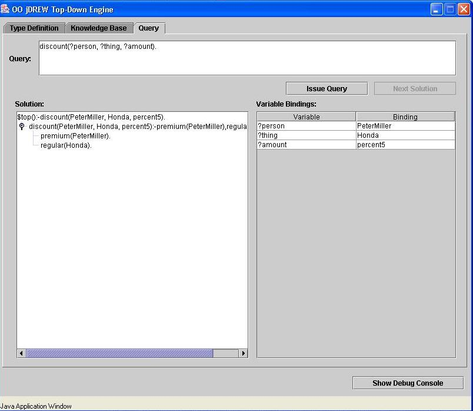
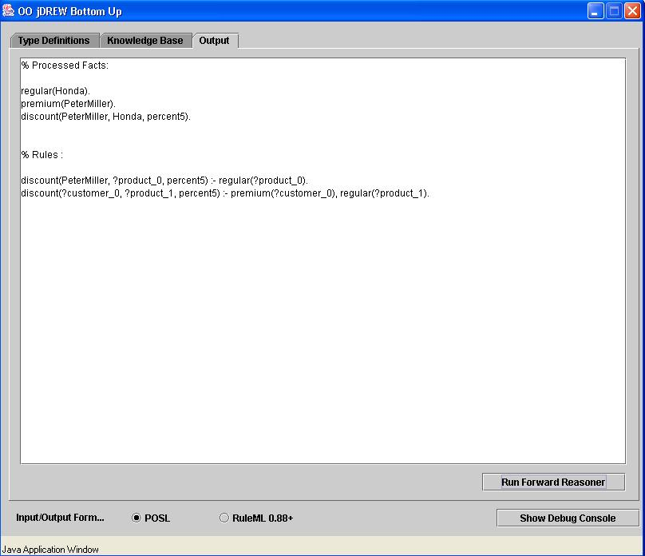
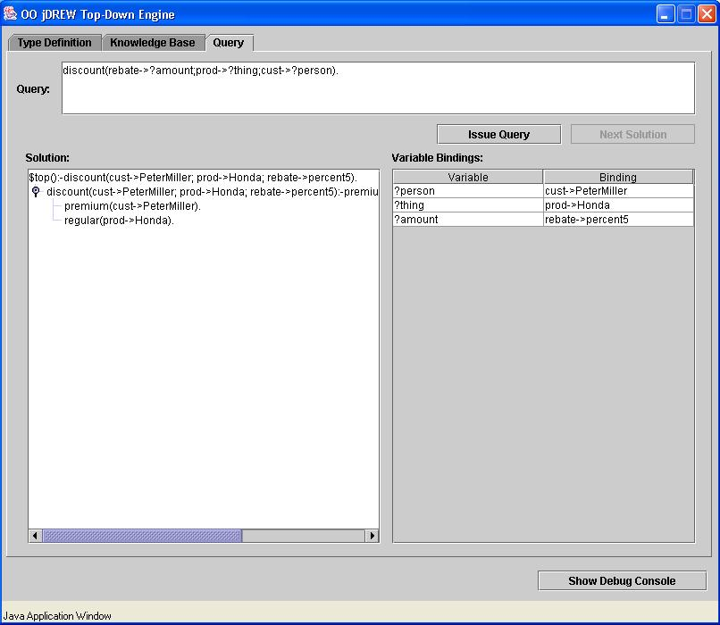
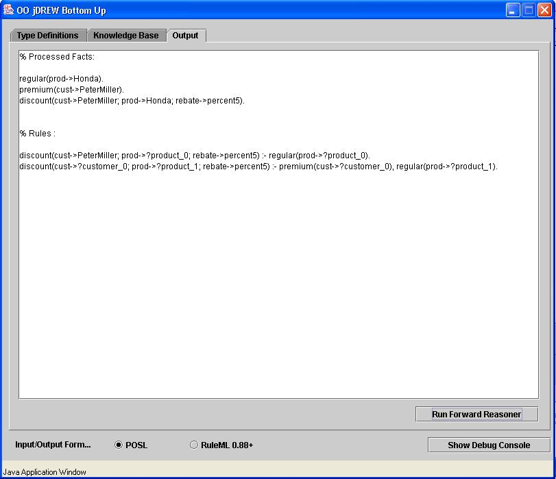

| > Home |
| > Documentation |
| > Downloads |
| > Online Demo |
| > Contact |
OO jDREW Examples in POSL
The discount for a customer buying a product is 5 percent if the customer is premium and the product is regular. discount(?customer,?product,percent5):- premium(?customer), regular(?product). premium(PeterMiller). regular(Honda). Top-down engine running the example:  Bottom-up engine running the example: 
Slotted Version of the example: discount(cust->?customer;prod->?product;rebate->percent5) :- premium(cust->?customer), regular(prod->?product). premium(cust->PeterMiller). regular(prod->Honda). Top-down engine running the slotted example:  Bottom-up engine running the slotted example: 
Last
Updated:
October 31, 2005
By:
Jing Mei